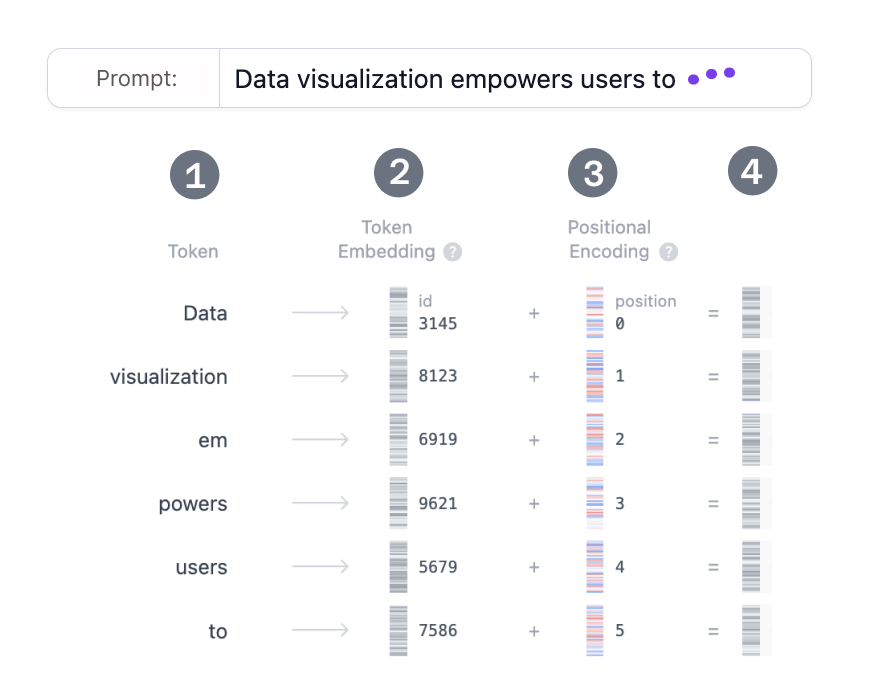
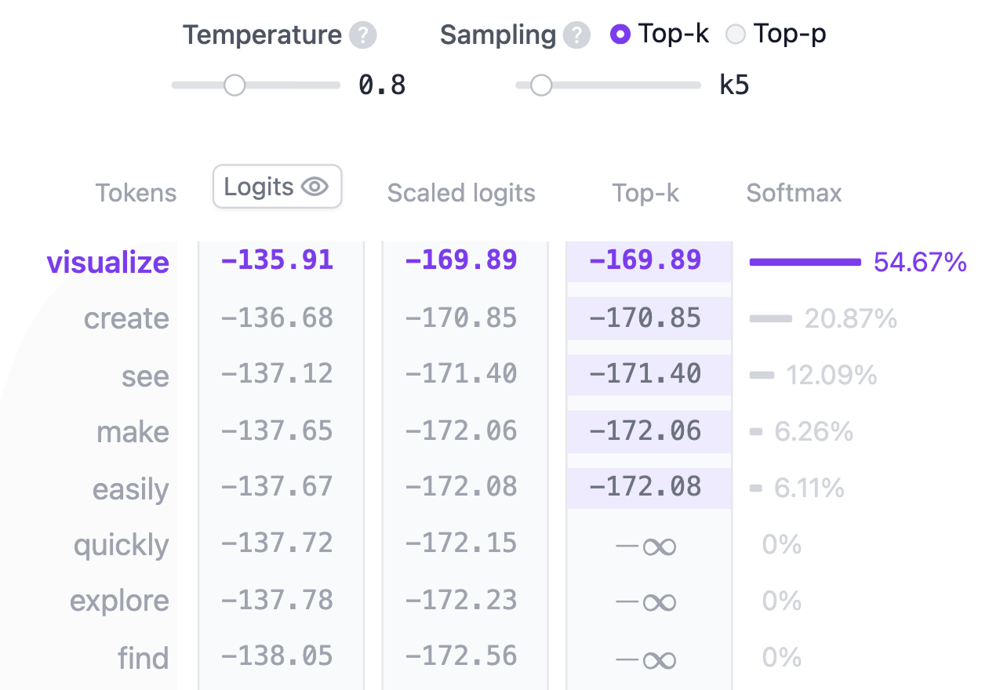

¿Qué es un Transformer?
El Transformer es una arquitectura de red neuronal que cambió de raíz la forma de hacer inteligencia artificial. Se presentó en 2017 en el artículo "Attention is All You Need" y desde entonces es la arquitectura de referencia del aprendizaje profundo: es la base de modelos generadores de texto como GPT de OpenAI, Claude de Anthropic, Llama de Meta y Gemini de Google. Más allá del texto, también se usa para generar audio, reconocer imágenes, predecir la estructura de proteínas y hasta jugar videojuegos.
En esencia, un Transformer que genera texto funciona con un único principio: la predicción del próximo token. Dado un texto, ¿cuál es el token más probable (una palabra o parte de una palabra) que sigue? Su gran innovación es el mecanismo de autoatención, que le permite procesar la secuencia completa y captar relaciones entre palabras lejanas mucho mejor que las arquitecturas anteriores.
Esta versión usa GPT-2 en español (small), un modelo de 124 millones de parámetros entrenado con libros en castellano. No es un modelo de última generación, pero comparte la arquitectura y los principios de los modelos actuales, lo que lo convierte en un punto de partida ideal para entender lo básico.
Arquitectura del Transformer
Todo Transformer que genera texto tiene tres componentes clave:
- Embedding: el texto se divide en unidades pequeñas llamadas tokens, que pueden ser palabras o partes de palabras. Cada token se convierte en un vector numérico (embedding) que captura su significado.
- Bloque Transformer: la unidad fundamental que procesa y
transforma los datos. Cada bloque incluye:
- Mecanismo de atención, el corazón del bloque. Permite que los tokens se comuniquen entre sí y capten el contexto y las relaciones entre palabras.
- Capa MLP (perceptrón multicapa), una red que procesa cada token por separado. Mientras la atención mueve información entre tokens, el MLP refina la representación de cada uno.
- Probabilidades de salida: una capa lineal final y la función softmax transforman los embeddings procesados en probabilidades, con las que el modelo predice el próximo token.
Embedding
Supongamos que querés generar texto a partir de la frase “La inteligencia artificial está transformando la”. Primero hay que convertirla
en algo que el modelo pueda procesar: números. De eso se encarga el embedding, en cuatro
pasos: 1) tokenizar el texto, 2) obtener el embedding de cada token, 3) agregar información de
posición y 4) sumar ambos para obtener el embedding final.

Paso 1: Tokenización
La tokenización parte el texto en piezas más chicas llamadas tokens, que pueden ser palabras
enteras o fragmentos. Como este modelo se entrenó en español, palabras frecuentes como "inteligencia" o "universidad" son un único token, mientras que
palabras raras se parten en varios. El vocabulario se fija antes del entrenamiento: este GPT-2
tiene 50.257 tokens distintos, cada uno con su número de identificación.
Paso 2: Embedding de tokens
GPT-2 (small) representa cada token del vocabulario con un vector de 768 números. Esos
vectores se guardan en una matriz de (50.257, 768): ¡unos 39 millones de
parámetros! Gracias a ella, los tokens con usos o significados parecidos quedan cerca en ese
espacio de muchas dimensiones, y los distintos quedan lejos.
Paso 3: Codificación posicional
La capa de embedding también codifica la posición de cada token en la frase. Cada modelo usa un método distinto; GPT-2 aprende su propia matriz de posiciones durante el entrenamiento.
Paso 4: Embedding final
Por último, se suman el embedding del token y el de su posición. El resultado captura a la vez el significado del token y su lugar en la secuencia.
Bloque Transformer
El procesamiento central ocurre en el bloque Transformer, formado por la autoatención
multi-cabeza y una capa MLP. Los modelos apilan muchos bloques, uno detrás de otro, y la
representación de cada token evoluciona de capa en capa hasta construir una comprensión cada
vez más rica. El GPT-2 (small) que estamos viendo tiene 12 bloques.
Autoatención multi-cabeza
La autoatención permite captar relaciones entre los tokens de una secuencia, de modo que la representación de cada token se vea influida por los demás. Las distintas cabezas miran esas relaciones desde perspectivas diferentes: una puede captar vínculos gramaticales cercanos y otra seguir el contexto general. Veamos el cálculo paso a paso.
Paso 1: Matrices Query, Key y Value

El embedding de cada token se transforma en tres vectores: Query (Q), Key (K) y Value (V), multiplicándolo por matrices de pesos aprendidas. Una analogía con un buscador web ayuda a entenderlo:
- Query (Q) es lo que escribís en la barra del buscador: el token que quiere "averiguar más".
- Key (K) es el título de cada página en los resultados: los tokens a los que la consulta podría prestar atención.
- Value (V) es el contenido de esas páginas. Una vez que la consulta encontró los resultados relevantes, se toma su contenido.
Con estos valores, el modelo calcula puntajes de atención que determinan cuánto debe enfocarse cada token en los demás.
Paso 2: División en cabezas
Los vectores Query, Key y Value se dividen en varias cabezas; en GPT-2 (small), 12. Cada cabeza procesa su
porción de forma independiente y capta relaciones distintas, lo que permite aprender en
paralelo muchos rasgos del lenguaje.
Paso 3: Autoatención enmascarada
En cada cabeza se calcula la autoatención enmascarada: el modelo se enfoca en las partes relevantes del texto, pero no puede ver los tokens futuros.

- Producto escalar: el producto entre las matrices Query y Key da el puntaje de atención, una matriz cuadrada con la relación entre todos los tokens.
- Escalado · Máscara: los puntajes se escalan y se tapa el triángulo superior de la matriz (se pone en menos infinito) para que el modelo no “espíe” el futuro.
- Softmax · Dropout: softmax convierte los puntajes en probabilidades. Cada fila suma 1 e indica cuánto importa cada token anterior.
Paso 4: Salida y concatenación
Los puntajes de atención se multiplican por la matriz Value para obtener la salida de cada cabeza. Las 12 salidas se concatenan y pasan por una proyección
lineal.
MLP: perceptrón multicapa

Después de la atención, las salidas pasan por el MLP: dos transformaciones lineales con una función de activación GELU en el medio.
La primera transformación expande la dimensión de 768 a 3072, para
captar patrones más complejos. La segunda la vuelve a comprimir a 768,
conservando lo útil de la expansión.
A diferencia de la atención, que mezcla información entre tokens, el MLP procesa cada token por separado.
Probabilidades de salida
Al salir del último bloque, una capa lineal final proyecta la representación a un espacio de 50.257 dimensiones: un valor, llamado logit, por cada token del vocabulario. Cualquier
token podría ser el siguiente; los logits permiten ordenarlos. Luego la función softmax los
convierte en una distribución de probabilidad que suma 1, de la que se elige el próximo token.

El último paso es elegir el próximo token. Acá juega la temperatura, una
operación muy simple: se dividen los logits por la temperatura.
temperatura = 1: dividir por uno no cambia nada.temperatura < 1: la distribución se vuelve más puntiaguda; el modelo es más seguro y previsible.temperatura > 1: la distribución se aplana; hay más azar, lo que a veces se llama la “creatividad” del modelo.
Además, el muestreo se puede ajustar con top-k y top-p:
top-k: solo se consideran los k tokens más probables.top-p: se considera el conjunto más chico de tokens cuya probabilidad acumulada supera p.
Combinando temperatura, top-k y top-p se equilibra un texto previsible con uno variado.
Componentes auxiliares
Hay componentes que mejoran el desempeño del Transformer aunque no son centrales para entender la idea: la normalización de capa estabiliza el entrenamiento, el dropout evita el sobreajuste y las conexiones residuales permiten que el gradiente fluya por toda la red.
Normalización de capa
Normaliza las entradas para que su media y su varianza sean estables, lo que hace el entrenamiento más estable y menos sensible a los pesos iniciales. En GPT-2 se aplica dos veces por bloque: antes de la atención y antes del MLP.
Dropout
Durante el entrenamiento, pone en cero al azar una fracción de las activaciones para que la red no dependa de neuronas específicas y generalice mejor. Al generar texto está desactivado.
Conexiones residuales
Se introdujeron en la red ResNet en 2015: son atajos que suman la entrada de una capa a su salida. Evitan que el gradiente se desvanezca y permiten entrenar redes muy profundas. GPT-2 las usa dos veces por bloque.
Para explorar
- Escribí tu propia frase y mirá cómo el modelo la procesa y predice la próxima palabra.
- Mové la temperatura para ver cómo el modelo pasa de previsible a “creativo”.
- Probá top-k y top-p y observá cómo cambia la distribución de probabilidad.
- Pasá el mouse por los mapas de atención para ver en qué tokens se fija cada palabra.
¿Cómo está hecho?
El modelo corre completo dentro del navegador. Se basa en la implementación de GPT de nanoGPT (Andrej Karpathy), convertida a ONNX Runtime. La interfaz está hecha con Svelte y D3.js.
Créditos
Transformer Explainer fue creado por Aeree Cho, Grace C. Kim, Alexander Karpekov, Alec Helbling, Jay Wang, Seongmin Lee, Benjamin Hoover y Polo Chau en el Georgia Institute of Technology, con licencia MIT.
Adaptación al español: traducción de la interfaz y reemplazo del modelo por DeepESP/gpt2-spanish (licencia MIT), para la Tecnicatura Universitaria en Ciencia de Datos e Inteligencia Artificial (IGTP, Universidad Provincial de Córdoba).